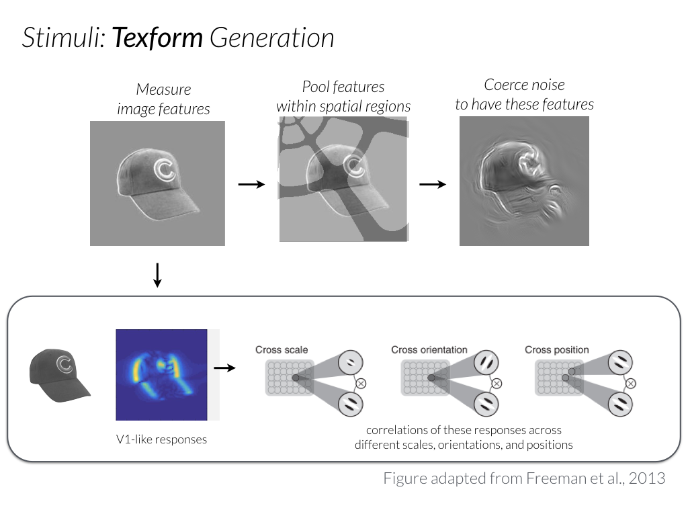
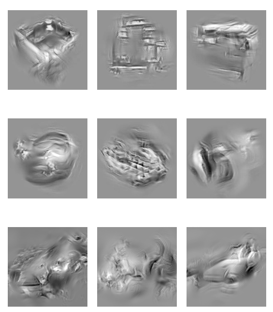

Resources
Egocentric video from children
The BabyView Project
The BabyView Project captures children’s everyday experiences in high-resolution video taken from the infant perspective, and uses these videos to better understand cognitive development. It is the largest open video dataset of children’s everyday experience to date, both in hours and in the diversity of participating families (over 4,000 hours from 99 children as of November 2026), and data collection is ongoing.
- Dataset: what each release contains
- Access: videos are shared with authorized researchers through Databrary
- Data use and ethics guidelines, including for AI models
- The BabyView camera: a GoPro Hero Bones on a lightweight helmet with a custom 3D-printed mount; build guides, CAD files, and protocols are on the OSF page
- Publications using BabyView
If you use the data, please cite the dataset paper: Long, Sparks, Xiang, Stojanov et al. (2025), Cognitive Computational Neuroscience doi arxiv. The camera design is described in Long et al. (2024), Behavior Research Methods doi.
Other egocentric video datasets
Analyzing social information in video
- First, see the discussion section of Long et al. (2022), Developmental Psychology; there are some limitations to this method!
- To run these models on your own data, start with the OpenPose repository we used.
- This repository has instructions for our pipeline: we applied the algorithm without fine-tuning and then used face and hand keypoints.
- You'll need a server with a GPU to run OpenPose (there may be easier algorithms available; let me know if you find one). Data management is a serious issue, as OpenPose produces one file per frame of each video, with keypoints for every person in every frame.
Children's drawings
Datasets
Our drawing datasets are available on OSF: the large dataset of children's drawings and recognition data from Long et al. (2024, Nature Communications), and the drawings from Long et al. (2023, Developmental Psychology). Feel free to email me with questions.
Analyzing drawings
If you want to analyze your own digital drawing data:
- For model embeddings
- I recommend this repository for getting OpenAI's CLIP model embeddings very easily
- We used custom PyTorch code, but THINGSvision is a great new resource for getting VGG-19 and other DNN model embeddings
- If you want to get stroke annotations, you can browse our codebase but do note that it is not intended for public use
Collecting drawings
If you're looking to collect your own drawing data:
- Since we initially collected these data, there is now a sketchpad plugin in JsPsych!
- Images/stroke data are typically sent to a server database via an internet connection since they are generated as the user produces the drawing — we used MongoDB. If you want to run an offline version of your experiment, you can use PouchDB (which caches the data locally) and then sends them to a CouchDB database when connected to the internet.
- For use in museums, we embedded our Javascript experiment in the Kiosk Pro Enterprise app so that you can implement some controls (e.g., control volume, turn the kiosk on/off at certain times of day).
Texform FAQ
What are texforms?
Texforms are a kind of synthetic stimuli that preserve some mid-level texture and coarse form information from original images, yet are unrecognizable at the basic-level (e.g., as a "cup"). I've found them to be a useful class of stimuli for my own work, and hopefully you can too. They're generated through two main steps: (1) iteratively coercing white noise to have the same image statistics as an original image within spatially defined windows (Freeman & Simoncelli, 2011) and then (2) making sure the resulting texforms are not recognizable at the basic-level.
Here's a link to the original code; below is a schematic of how they were generated. However, Arturo Deza has since led a project generating texforms using a more efficient method with a well-maintained codebase if you are interested in making your own (see GitHub repository).


OK, but what ARE the features preserved in the texforms?
There's a mathematical answer and an intuitive answer to that question. At a mathematical level, it's basically preserving V1-like responses from a Gabor wavelet model and their correlations across different scales, orientations, and position -- and it's preserving these features with the spatial pooling windows. This extra bit of spatial information is what makes texforms different from the original Portilla & Simoncelli (2000) model and resulting textures (see here for code and explanation).
But if you're a psychologist, that's probably not a very satisfying answer. At an intuitive gloss, they seem to preserve both the relevant curvature statistics (how curvy/boxy something looks) as well as basic texture information.
I've done some work exploring what these features are by examining how changing a texform changes how well you can tell whether it was generated from a picture of animal vs. an object.
When texforms are contrast-negated (see Figure) or inverted, people can still derive animacy information from them -- and this is predicted by how "curvy" vs "boxy" people rate these texforms. Accordingly, if you remove all "curvy" information from the images (and only retain horizontal and vertical spatial frequencies), then classification accuracy drops quite a bit for animals. And if you remove ALL of the cross-correlation statistics from the model -- effectively eliminating all of the relevant textural statistics -- you also decrease classification down to chance. For more details, you can read about these data in Experiment 4 of this paper or grab these stimuli from its github repository. Of course, there's still a lot of work to be done here, admittedly, and a large library of intuitive "mid-level" features we could test.
Importantly, however, I think of texforms as one way to hack into the large "black box" of mid-level feature space -- they're just a way to try to understand the visual system, rather than an exact copy of mid-level representations.

Figure 5 from Long, Störmer, & Alvarez (2017)
(Upper panel) Adjusted animate classification accuracy for each of the five modified image sets. Zero reflects chance classification. Error bars reflect standard error of the mean over individual items. (Lower panel) Four example items from each image set.
So are your texforms "metamers" in the periphery?
We've never tested this, but I highly doubt it, given that they are generated as isolated objects on blank backgrounds. The original textures generated by this algorithm in Freeman & Simoncelli (2011) are all created from scenes or naturalistic textures -- not isolated objects.
Could I use a different texture synthesis algorithm to make texforms?
In principle, as long as the algorithm computes the image statistics over spatial information, yes. In practice, I've found that square pooling windows often don't produce texforms that have spatially coherent "form" information -- but that's subjective and you should feel free to experiment! The code includes a way to use square pooling windows. However, Ruth Rosenholtz has some great, related work that you should definitely check out if you're interested in this topic (see FAQ on her "mongrel" model here).